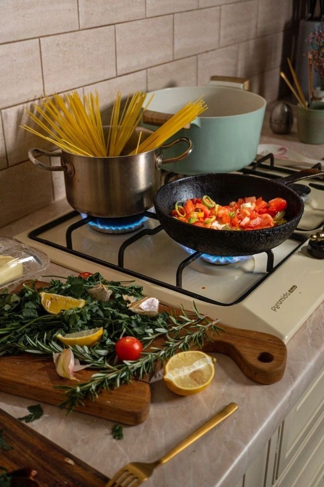
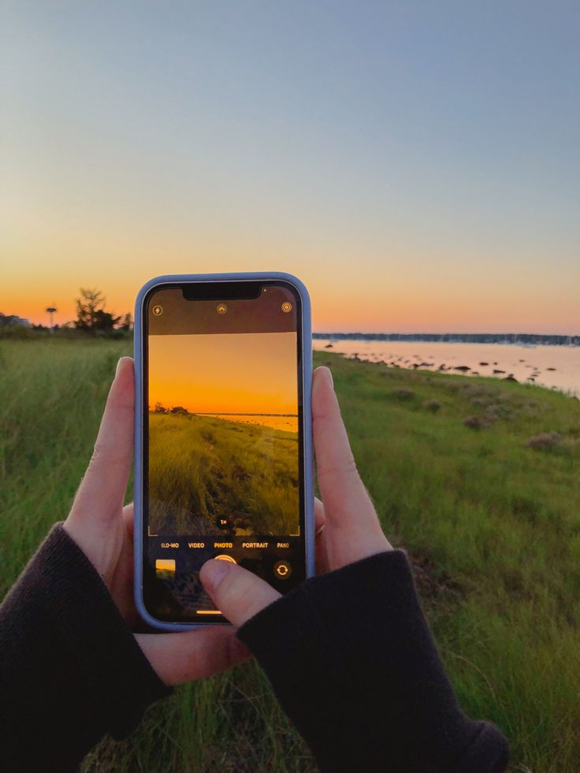
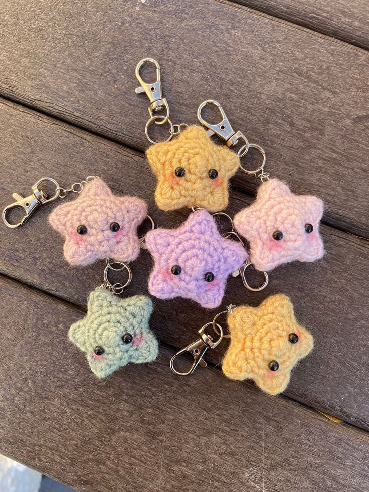
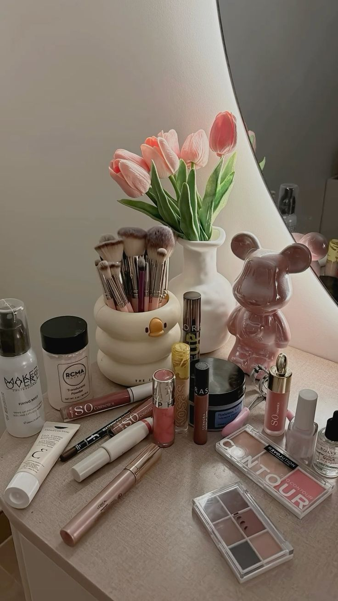

Coding 💻
Mengeksplorasi dunia pemrograman dan membuat karya digital.

Masak 🍳
Menciptakan berbagai resep dan hidangan lezat.
Traveling ✈️
Menjelajahi tempat-tempat baru dan budaya yang berbeda.

Memotret 📸
Mengabadikan momen dan keindahan di sekitar.

Merajut 🧶
Membuat kreasi tekstil yang unik dan hangat.

Make Up 💄
Bereksperimen dengan seni tata rias.
css /*
* Variabel Warna
* Digunakan untuk konsistensi desain
*/
:root {
--color-background-soft: #fcf8f6; /* Krem lembut */
--color-background-light: #ffffff;
--color-primary-dark: #5d4a4a; /* Cokelat tua untuk judul/footer */
--color-secondary-accent: #a0522d; /* Cokelat tanah untuk link/aksen */
--color-text-dark: #333;
--color-text-tagline: #8d7373;
}
/*
* Gaya Umum dan Estetika
*/
body {
/* Gradasi warna yang lebih lembut dan hangat */
background-image: linear-gradient(135deg, #fff7f2 0%, var(--color-background-soft) 100%);
font-family: 'Roboto', sans-serif;
color: var(--color-text-dark);
margin: 0;
padding: 0;
line-height: 1.6;
scroll-behavior: smooth;
}
h1, h2, h3 {
font-family: 'Playfair Display', serif;
color: var(--color-primary-dark);
}
a {
color: var(--color-secondary-accent);
text-decoration: none;
transition: color 0.3s ease;
}
a:hover {
color: var(--color-primary-dark);
}
/*
* Header dan Navigasi
*/
.main-header {
background-color: var(--color-background-light);
box-shadow: 0 1px 3px rgba(0, 0, 0, 0.05);
position: sticky;
top: 0;
z-index: 1000;
}
.main-nav ul {
list-style: none;
padding: 15px 20px;
margin: 0 auto;
max-width: 1000px;
display: flex;
justify-content: center;
gap: 25px;
}
.main-nav a {
font-weight: 400; /* Dibuat lebih ringan */
padding: 5px 0;
font-size: 0.9em;
text-transform: uppercase;
letter-spacing: 1px;
}
.main-nav a:hover {
color: var(--color-primary-dark);
border-bottom: 2px solid var(--color-secondary-accent); /* Aksen bawah saat hover */
}
/*
* Konten Utama (Main)
*/
.content-wrapper {
max-width: 1000px;
margin: 40px auto;
padding: 0 20px;
}
/*
* Bagian Profil Hero (Header Besar)
*/
.profile-hero {
display: flex;
align-items: center;
gap: 60px;
padding: 60px 0;
}
.profile-image-container {
flex-shrink: 0;
position: relative;
width: 250px;
height: 250px;
/* Bingkai yang menyerupai bentuk pada desain */
border-radius: 50%;
box-shadow: 0 0 0 10px rgba(255, 255, 255, 0.3); /* Bingkai luar putih transparan */
overflow: hidden;
}
.profile-image {
width: 100%;
height: 100%;
object-fit: cover;
display: block;
}
/* Latar belakang bunga pada desain gambar */
.flower-background {
position: absolute;
top: 0;
left: 0;
width: 100%;
height: 100%;
/* Gunakan background-image bunga jika Anda ingin bingkai tetap lingkaran/oval */
/* Untuk menyesuaikan desain, saya biarkan kosong dan mengandalkan foto profil yang dikirim */
border-radius: 50%;
z-index: -1;
}
.profile-info {
flex-grow: 1;
}
.profile-info h1 {
font-size: 3.5em; /* Ukuran yang lebih besar */
margin-bottom: 5px;
line-height: 1.1;
}
.tagline {
font-style: italic;
color: var(--color-text-tagline);
margin-top: 0;
margin-bottom: 30px;
font-weight: 300;
}
.details-box {
background-color: var(--color-background-light);
padding: 20px;
border-left: 5px solid var(--color-secondary-accent);
border-radius: 5px;
box-shadow: 0 2px 5px rgba(0, 0, 0, 0.05);
}
.details-box h2 {
margin-top: 0;
font-size: 1.4em;
color: var(--color-primary-dark);
}
/*
* Bagian Hobi
*/
.hobbies-section {
padding: 60px 0;
background-color: var(--color-background-soft); /* Warna latar yang membedakan */
margin: 40px -20px 0;
padding: 60px 20px;
}
.hobbies-section h2 {
text-align: center;
font-size: 2.8em;
margin-bottom: 50px;
}
.hobbies-grid {
display: grid;
/* Grid 3 kolom, minimal 250px per item */
grid-template-columns: repeat(auto-fit, minmax(250px, 1fr));
gap: 30px;
}
.hobby-item {
background-color: var(--color-background-light);
border-radius: 8px;
box-shadow: 0 4px 10px rgba(0, 0, 0, 0.08);
overflow: hidden;
text-align: center;
transition: transform 0.3s ease, box-shadow 0.3s ease;
}
.hobby-item:hover {
transform: translateY(-5px);
box-shadow: 0 15px 25px rgba(0, 0, 0, 0.1);
}
.hobby-image-container {
width: 100%;
height: 200px; /* Tinggi gambar hobi yang seragam */
overflow: hidden;
}
.hobby-image-container img {
width: 100%;
height: 100%;
object-fit: cover; /* Pastikan gambar mengisi container tanpa terdistorsi */
transition: transform 0.5s ease;
}
.hobby-item:hover .hobby-image-container img {
transform: scale(1.05);
}
.hobby-item h3 {
margin: 15px 0 5px;
font-size: 1.5em;
color: var(--color-primary-dark);
}
.hobby-item p {
padding: 0 15px 20px;
margin: 0;
font-size: 0.95em;
color: #666;
}
/*
* Footer dan Kontak
*/
.main-footer {
background-color: var(--color-primary-dark);
color: #fff;
padding: 40px 20px;
text-align: center;
}
.main-footer h2 {
color: #fff;
margin-bottom: 20px;
font-size: 2em;
}
.main-footer a {
color: #ffe4b5; /* Warna link krem-peach */
font-weight: 500;
}
.main-footer a:hover {
color: #fff;
}
.contact-info p {
margin: 8px 0;
font-weight: 300;
}
.copyright {
margin-top: 30px;
font-size: 0.85em;
opacity: 0.9;
}
/*
* Media Queries untuk Responsif
*/
@media (max-width: 900px) {
.hobbies-grid {
grid-template-columns: repeat(auto-fit, minmax(200px, 1fr));
}
}
@media (max-width: 768px) {
.profile-hero {
flex-direction: column;
text-align: center;
gap: 30px;
padding: 40px 0;
}
.profile-image-container {
width: 200px;
height: 200px;
}
.profile-info h1 {
font-size: 3em;
}
.main-nav ul {
flex-wrap: wrap;
justify-content: space-around;
gap: 10px;
padding: 10px;
}
.details-box {
text-align: left;
}
}
@media (max-width: 480px) {
.profile-info h1 {
font-size: 2.5em;
}
.hobbies-grid {
grid-template-columns: 1fr; /* Satu kolom di ponsel */
}
}